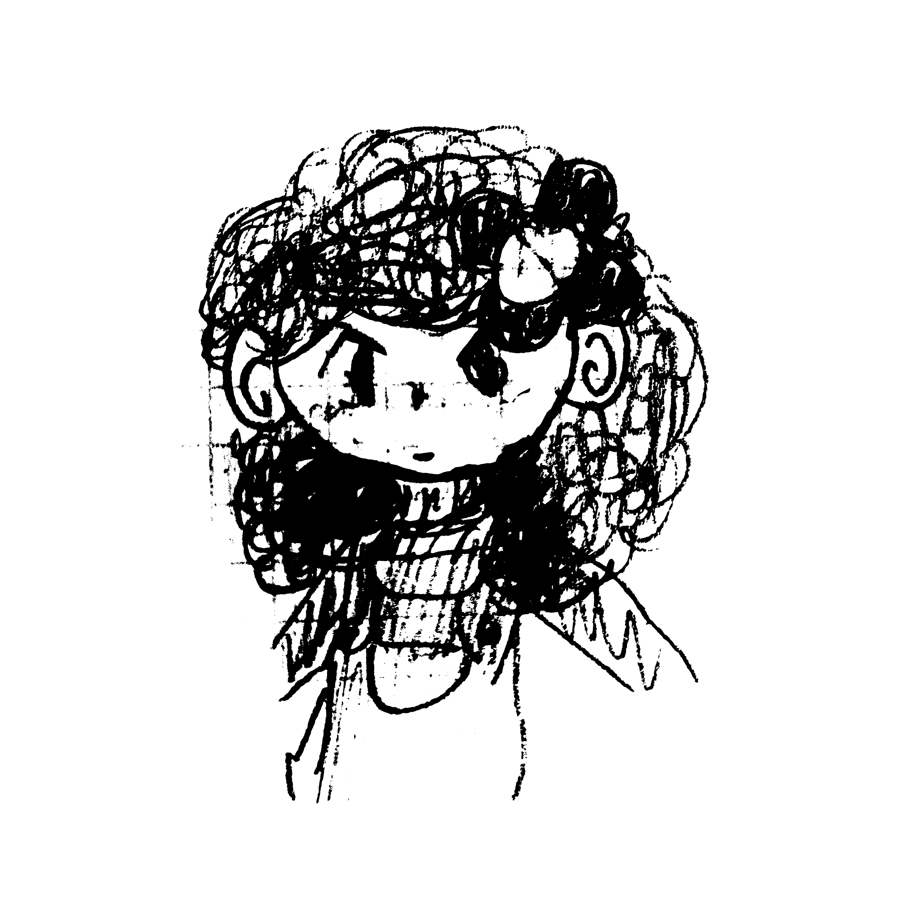

30 - April:
"It's very weird, I've never seen Blume's parents in none of my dreams."
"They really don't care about her..."
"I wish I could go give her a hug, she's so cute it makes me sad."
"I could talk to her for hours, we have a lot in common."
"She could even be my best friend! We would make spaghetti and read novels and..."
"..."
"Yeah, this usually happens to me when I've just woken up, sometimes I forget that it was all just a dream."
"Oh yeah, I just remembered! I said that I was going to draw her to show it to Kase!"
"I'll make a quick drawing down here before I forget!"

"There she is!"
"I know I am not a very good artist... I did my best!"
30 / 04 / ????
22 - April:
"Aw man, Kase doesn't believe me whenever I tell him what I dreamt."
"He says it's impossible for you to keep dreaming the same thing every night."
"Sometimes it seems like he doesn't even care and proceeds to change the subject :/"
"Right now my mind is kind of fuzzy, but tomorrow I'll try to write down everything that happened in my dream the moment I wake up!"
"I will even draw Blume so Kase can see how she looks!"
"Still... Kase will say that I made that up."
"Man, I don't understand him, why would I lie about such a stupid thing as a dream?"
22 / 04 / ????
16 - February:
"My birthday was almost a month ago and Kase still doesn't want to go to the mountains with me."
"I just turned 18! Kase promised to me that in my 18th birthday we would go on an adventure to the mountains!"
"(I think he's scared! Hee hee hee)"
"Anyway, I've been preparing myself for this journey these past days."
"I practiced a lot with my bo-staff, I'm actually pretty good with it."
"Still, Kase tells me that there are no dangers in the way to the mountains, so theres no need to fight!"
"Actually, I just want to show off my skills with the bo-staff Hee hee hee!"
"About my latest dreams... Hmm... Nothing new, Blume has a pretty boring life.
"She spends all day in front of her computer reading... Uhh 'Vampire fan-fics'? I think that's what she calls it."
"I wish I had a computer or something like that, it looks very fun to use"
"Assuming something like that exists... Of course"
"Sometimes I forget that dreams are not real."
"But mine feel so... Weird..."
16 / 02 / ????
14 - February:
"Kase woke me up in the middle of the night just to tell me about this crazy dream he just had."
"He told me that he dreamt that he was the king of a castle made out of cheese, and whenever he was hungry, he would just bite the walls of the castle!"
"That sounds incredible! I said, while I was groggy laying on my bed."
"I wish I had these crazy dreams Kase has though... I've only dreamt about one thing ever."
"Dream after dream... it feels like a connected story."
"I dream of this girl, her name is Blume. I feel sorry for her, she's always alone, her parents are never at home."
"I can relate, I've never had parents either. Kase told me that I was born from an apple tree! How is that even possible?"
"What even are parents? I learnt all of these words and concepts from Blume."
"How is it possible that I can dream of things and words that I've never seen or heard?"
"These feel more like memories than dreams..."
"What is a car? What is a train? What is a computer? What is a dad? What is a mom?"
"How do I know all of this?"
"Why have I never seen someone like the people I've seen in my dreams?"
":("
"That's why I love sleeping, I spend all the time dreaming about her, then, when I wake up, I sit at my desk and I start writing everything down in these books."
"After all... there's not a lot I can do here, Blume's world is so fun... Mine on the other hand... is so boring, there are no shops, no playgrounds, no movies... no friends..."
"I can't believe I haven't lost my mind after 18 years of this, I'm pretty sure Blume would have!"
"Anyway, I think that's it for today."
14 / 02 / ????